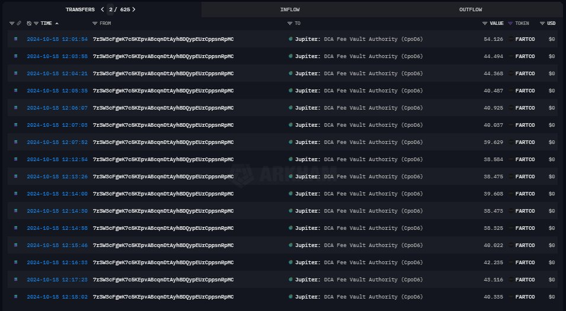
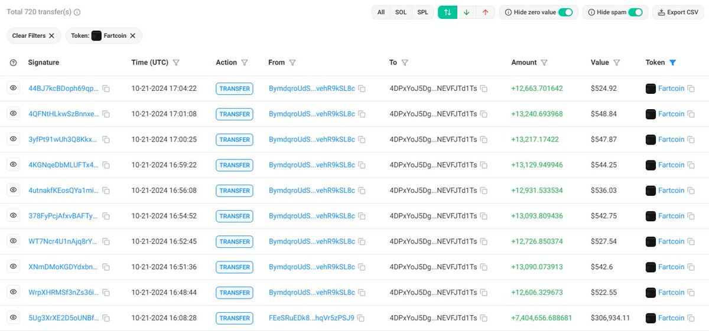
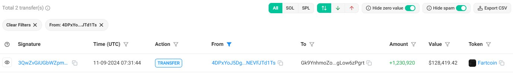
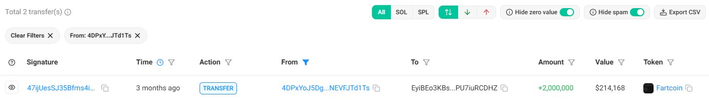
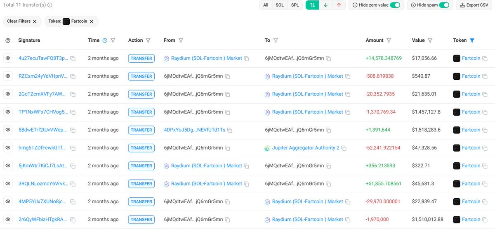
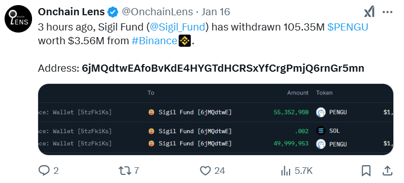

This is not retail-led organic demand. The on-chain trace points to a coordinated insider-linked operation: early low-cap accumulation, centralized routing, and staged liquidation via recurring executor wallets.
The cluster entered below ~$200K and realized exits above ~$3M, with repeated fragmented transfer patterns that behave like a single execution system rather than independent market participants.
What We Traced
The operation begins with aggressive DCA accumulation with Jupiter DCA tool shortly after launch, then transitions into a hub-and-spoke routing model. Wallet 2 repeatedly acts as the control hub, redistributing inventory to staging wallets and then into execution wallets.
Wallets 6-8 (all j1o-prefixed) receive fragmented transfers and rapidly sell through DEX paths. The same path repeats across multiple dates and volumes, consistent with synchronized distribution rather than normal holder behavior.
Timeline of the Operation
| Time | Observed Action | Why It Matters |
|---|---|---|
| Launch + ~5h | Wallet 1 accumulates 7.4M tokens via ~400 transactions (200 SOL), while market cap remains under $2M. | Insider-style early positioning at low-cap levels. |
| +3 days | Wallet 1 transfers full 7.4M inventory to Wallet 2; Wallet 2 runs 4 more DCA rounds for another 4.6M tokens (910 SOL). | Centralized inventory management and conviction accumulation. |
| Nov 9 | Wallet 2 sends 1.2M to Wallet 3. Wallet 3 splits 200K across Wallets 6-8 over 49 transfers; immediate DEX selling; remaining 1M routed back. | Pilot disposal sequence and throughput test of the executor cluster. |
| Nov 10 | Wallet 2 sends another 1.2M to Wallet 4. Then 414 fragmented transfers flow to Wallets 6-8 and are dumped. | Scaled disposal using the same execution topology. |
| Dec 16/19 | Wallet 2 offloads 3.4M tokens to Wallet 5; Wallet 5 liquidates around $3M on Raydium. | Major profit extraction stage. |
Flow of Control
Key Numbers
| Metric | Value |
|---|---|
| Estimated entry capital | <$200K |
| Accumulation batch 1 | 7.4M tokens, 200 SOL, ~400 transactions |
| Accumulation batch 2 | 4.6M tokens, 910 SOL, 4 DCA rounds |
| Peak coordinated inventory | ~12M tokens |
| Large realized exit | ~$3M via Wallet 5 on Raydium |
| Execution signature | Repeated fragmented routing + immediate DEX disposal |
Evidence Screenshots






Final Judgment
The wallet behavior is best explained as insider trading combined with coordinated market manipulation. The cluster accumulated early, routed inventory through a central hub, and executed structured distribution through reusable executor wallets to extract profit at scale. This pattern does not match organic, retail-driven demand formation.